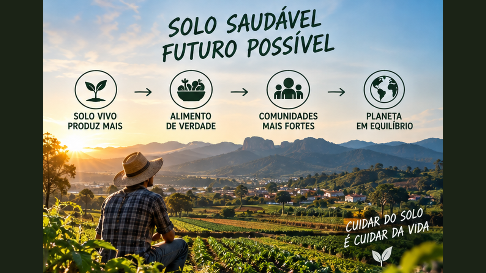
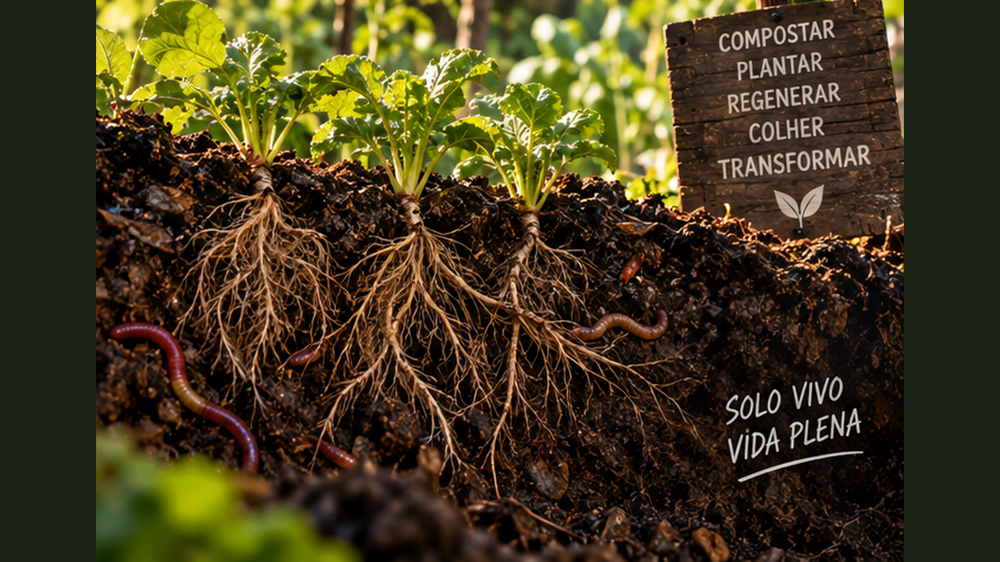

A riqueza debaixo dos nossos pés: biologia, matéria orgânica, água, estrutura, diagnóstico e manejo regenerativo para produzir cuidando da base da vida.
6 módulos24 aulasPlano Solo Vivo
0 de 24 aulas concluídas
O patrimônio que quase nunca enxergamos
Este curso mergulha na base de qualquer sistema agrícola: o solo. Você vai aprender a observar sua estrutura, vida, matéria orgânica, água e sinais de degradação e transformar o diagnóstico em um plano prático de regeneração.

01
O solo é um ecossistema
Aprenda a enxergar o chão como uma comunidade viva e uma infraestrutura essencial para produzir alimentos.
Aula 01
Muito mais que terra
Solo é resultado da interação entre minerais, matéria orgânica, água, ar e organismos ao longo do tempo. Sua estrutura determina como raízes crescem, como a água infiltra e quanto oxigênio permanece disponível. Um solo produtivo não é apenas aquele que recebe nutrientes: ele precisa funcionar fisicamente, quimicamente e biologicamente.
Textura, estrutura e profundidade variam entre lugares. Por isso, observar antes de corrigir é essencial. A mesma prática pode produzir resultados diferentes em solos arenosos, argilosos ou compactados.
Atividade prática
Pegue duas amostras de locais diferentes e compare cor, cheiro, umidade, presença de raízes e facilidade de desfazer torrões.
Aula 02
A vida invisível
Bactérias, fungos, protozoários e outros organismos participam da decomposição e da ciclagem de nutrientes. Minhocas e pequenos animais fragmentam resíduos e criam canais. Essa rede biológica responde ao alimento disponível, à umidade, à temperatura e às práticas de manejo.
Não é necessário identificar cada organismo para começar a cuidar da biologia do solo. Manter raízes vivas, matéria orgânica e menor perturbação cria condições para comunidades mais diversas.
Atividade prática
Liste cinco sinais observáveis de atividade biológica que você procuraria em um canteiro.
Aula 03
Textura e estrutura
Textura descreve a proporção de partículas minerais de diferentes tamanhos; estrutura descreve como essas partículas se agregam. Um solo pode ter textura argilosa e ainda apresentar boa estrutura, ou estar compactado e pouco poroso.
A estrutura influencia infiltração, erosão e desenvolvimento radicular. Manejo de cobertura, raízes e matéria orgânica pode favorecer agregação ao longo do tempo.
Atividade prática
Faça o teste tátil com uma pequena amostra úmida e registre suas impressões sem tentar substituir uma análise técnica.
Aula 04
Raízes contam a história
Raízes tortas, rasas ou concentradas em fissuras podem revelar obstáculos físicos. Raízes abundantes em diferentes profundidades sugerem melhor exploração do perfil. Observar plantas é uma forma indireta de observar o solo.
Ao retirar uma planta, veja se as raízes ocupam o volume disponível, se há zonas endurecidas e se existem sinais de encharcamento. O objetivo é aprender a diagnosticar antes de intervir.
Atividade prática
Observe as raízes de uma planta espontânea ou cultivada e desenhe o formato encontrado.
Ferramenta do módulo — atualize seu Caderno Solo Vivo com observações, indicadores e decisões de manejo.
02
Matéria orgânica e fertilidade
Entenda como resíduos vegetais, compostagem e ciclagem alimentam o sistema.
Aula 05
Matéria orgânica é capital do solo
Resíduos de plantas e organismos em diferentes estágios de decomposição participam da formação da matéria orgânica. Ela influencia retenção de água, agregação e disponibilidade de nutrientes, além de fornecer energia para organismos.
Construí-la é processo contínuo. Retirar toda biomassa e deixar o solo exposto interrompe parte desse ciclo. O manejo precisa devolver materiais ao sistema de forma compatível com a produção.
Atividade prática
Liste quais resíduos orgânicos disponíveis no seu território poderiam retornar ao solo com segurança.
Aula 06
Compostagem com equilíbrio
Compostagem transforma resíduos orgânicos por ação de microrganismos. Misturar materiais mais úmidos e ricos em nitrogênio com materiais secos e ricos em carbono ajuda a criar condições adequadas. Umidade e aeração precisam ser acompanhadas.
Mau cheiro intenso pode indicar excesso de umidade ou falta de oxigênio. Uma pilha muito seca pode desacelerar. Observar temperatura, cheiro e aparência ensina mais do que seguir uma receita rígida.
Atividade prática
Planeje uma composteira listando materiais verdes, materiais secos, local e rotina de observação.
Aula 07
Cobertura: alimento e proteção
Palhada reduz impacto da chuva, modera temperatura e diminui evaporação. Conforme se decompõe, participa da ciclagem de matéria. Plantas de cobertura também mantêm raízes ativas e podem produzir biomassa no próprio local.
Cobertura deve ser manejada para não sufocar mudas pequenas nem criar problemas específicos de umidade. O princípio é manter o solo protegido e ajustar pela observação.
Atividade prática
Compare durante uma semana um pequeno ponto coberto e outro descoberto quanto à umidade.
Aula 08
Nutrientes circulam
Plantas retiram elementos do solo e parte retorna por folhas, raízes e resíduos. Colheitas exportam nutrientes; erosão e lixiviação também podem gerar perdas. Fertilidade sustentável depende de equilibrar entradas, saídas e ciclagem.
Adubação sem diagnóstico pode desperdiçar recursos ou criar desequilíbrios. Para decisões de correção e fertilização, análise de solo e orientação técnica podem ser importantes.
Atividade prática
Desenhe um ciclo mostrando entrada, absorção, colheita, resíduos, decomposição e retorno de nutrientes.
Ferramenta do módulo — atualize seu Caderno Solo Vivo com observações, indicadores e decisões de manejo.
03
Água, ar e estrutura
Aprenda a manejar porosidade, infiltração e compactação.
Aula 09
O solo precisa respirar
Poros armazenam água e ar. Quando todos ficam saturados por longos períodos, raízes podem sofrer falta de oxigênio; quando o solo seca demais, processos biológicos e crescimento diminuem. Boa estrutura cria uma distribuição de poros que permite equilíbrio.
Drenagem depende de textura, estrutura, relevo e profundidade. Antes de irrigar mais, observe se a água consegue entrar e sair adequadamente.
Atividade prática
Após uma irrigação ou chuva, observe quanto tempo a superfície permanece encharcada em diferentes pontos.
Aula 10
Compactação e suas causas
Máquinas pesadas, pisoteio repetido e trabalho do solo em condições inadequadas podem aumentar compactação. A resistência dificulta raízes e infiltração e pode intensificar escoamento superficial.
A solução não é sempre revolver profundamente. Prevenir tráfego desnecessário, manter cobertura e usar raízes de diferentes arquiteturas podem fazer parte de uma recuperação gradual.
Atividade prática
Mapeie caminhos de maior pisoteio em uma área e proponha uma forma de concentrar circulação.
Aula 11
Infiltrar em vez de perder
Água que corre rapidamente pela superfície pode levar partículas e nutrientes. Solo coberto e estruturado tende a desacelerar esse fluxo e favorecer infiltração, embora intensidade de chuva e declive continuem importantes.
Observar para onde a água vai permite posicionar cultivos, caminhos e coberturas com mais inteligência. Obras de drenagem exigem cuidado técnico quando houver risco.
Atividade prática
Faça um mapa com setas indicando o caminho da água em uma chuva forte.
Aula 12
Erosão é perda de patrimônio
Erosão remove a camada superficial, geralmente mais rica em matéria orgânica e atividade biológica. Sulcos, ravinas e sedimentos acumulados são sinais de que o sistema está perdendo solo mais rápido do que consegue formar.
Cobertura permanente, manejo de água e vegetação são estratégias centrais. Casos severos precisam de avaliação profissional para evitar intervenções que agravem o problema.
Atividade prática
Fotografe ou desenhe três sinais de erosão que você saberia reconhecer.
Ferramenta do módulo — atualize seu Caderno Solo Vivo com observações, indicadores e decisões de manejo.
04
Diagnóstico na prática
Transforme observação e análise em decisões de manejo.
Aula 13
Comece pelo histórico
Saber o que aconteceu na área ajuda a interpretar o presente. Cultivos anteriores, uso de máquinas, aplicação de corretivos, queimadas, erosão e períodos de abandono deixam marcas.
Converse com quem conhece o terreno e registre mudanças. O histórico evita atribuir todos os problemas a uma única causa visível.
Atividade prática
Crie uma linha do tempo de cinco acontecimentos importantes de um terreno conhecido.
Aula 14
Amostragem e análise de solo
Análises laboratoriais podem informar pH, nutrientes e outros parâmetros, mas a qualidade começa na amostragem. Misturar pontos inadequados ou coletar de forma inconsistente pode gerar resultado pouco representativo.
Métodos e profundidades dependem do objetivo e das recomendações locais. Para decisões de correção, siga orientações de laboratório, assistência técnica ou profissional habilitado.
Atividade prática
Escreva quais informações você levaria a um técnico antes de solicitar uma análise.
Aula 15
Indicadores simples de campo
Cobertura, infiltração, presença de minhocas, profundidade de raízes, agregação e sinais de erosão podem ser acompanhados ao longo do tempo. Nenhum indicador isolado define saúde do solo.
O valor está na repetição: observar sempre no mesmo local e época comparável permite perceber tendências.
Atividade prática
Escolha cinco indicadores e crie uma escala simples de 1 a 5 para acompanhamento.
Aula 16
Diagnóstico vira prioridade
Uma lista de problemas pode paralisar. Organize-os por impacto, urgência e possibilidade de ação. Solo exposto em encosta pode ser prioridade maior que uma pequena deficiência visual em outra área.
Depois associe cada prioridade a uma prática e a um indicador. Assim, manejo deixa de ser tentativa aleatória.
Atividade prática
Monte uma tabela: problema, provável causa, ação, prazo e indicador.
Ferramenta do módulo — atualize seu Caderno Solo Vivo com observações, indicadores e decisões de manejo.
05
Regenerar produzindo
Integre cobertura, diversidade, raízes e economia em sistemas produtivos.
Aula 17
Raízes vivas pelo maior tempo possível
Culturas de cobertura, consórcios e planejamento entre safras podem reduzir períodos sem raízes ativas. Raízes alimentam relações biológicas e ajudam a estruturar o solo.
A escolha de espécies precisa considerar clima, água, objetivo e rotação. Cobertura não deve competir de forma descontrolada com a cultura principal.
Atividade prática
Planeje uma sequência anual tentando reduzir os meses de solo sem plantas vivas.
Aula 18
Diversidade de funções
Gramíneas, leguminosas, hortaliças, arbustos e árvores possuem arquiteturas e ciclos diferentes. Combinações bem planejadas podem explorar recursos em diferentes camadas e produzir biomassa variada.
Diversidade precisa ser manejável. Comece com funções claras: alimento, cobertura, biomassa, raiz profunda ou atração de polinizadores.
Atividade prática
Monte um grupo de cinco espécies e atribua uma função principal a cada uma.
Aula 19
Menos desperdício, mais ciclo
Restos de poda, palhada e resíduos adequados podem deixar de ser descarte e virar recurso. Isso reduz saídas do sistema e pode diminuir compras externas ao longo do tempo.
Nem todo resíduo deve ser aplicado diretamente. Materiais contaminados ou inadequados precisam de destino seguro. Circular recursos exige critério.
Atividade prática
Faça um inventário de resíduos da produção e classifique: reutilizar, compostar, pesquisar ou descartar corretamente.
Aula 20
Solo saudável e resultado econômico
Degradação pode aumentar gastos com irrigação, fertilização e correção, além de reduzir estabilidade produtiva. Práticas regenerativas também têm custos de implantação e manejo, portanto precisam ser avaliadas economicamente.
Acompanhar produtividade, custos e indicadores de solo juntos permite enxergar se a estratégia está fortalecendo o negócio e a base ecológica.
Atividade prática
Escolha dois indicadores de solo e dois financeiros para acompanhar durante um ciclo.
Ferramenta do módulo — atualize seu Caderno Solo Vivo com observações, indicadores e decisões de manejo.
06
Plano Solo Vivo
Construa um programa de melhoria de 12 meses baseado em observação e metas realistas.
Aula 21
Escolha a área e a meta
Defina uma área manejável e um objetivo específico: aumentar cobertura, reduzir erosão, melhorar infiltração ou ampliar matéria orgânica, por exemplo. Metas claras facilitam selecionar práticas.
Evite prometer mudanças impossíveis em poucos meses. Solo é construído ao longo do tempo e responde de maneira diferente conforme contexto.
Atividade prática
Escreva uma meta de 12 meses e três sinais de progresso.
Aula 22
Selecione práticas coerentes
Cobertura, compostagem, plantas de cobertura, redução de perturbação e manejo de tráfego são ferramentas, não receitas universais. Escolha apenas práticas ligadas ao diagnóstico.
Começar com poucas mudanças permite identificar o que realmente funcionou. Registre como cada prática será executada e qual resultado espera.
Atividade prática
Associe cada problema prioritário a uma prática e uma justificativa.
Aula 23
Calendário, recursos e custos
Distribua implantação, manutenção e observação ao longo do ano. Liste sementes, biomassa, ferramentas, análise e mão de obra. Isso revela se o plano cabe no orçamento e na rotina.
Inclua custos evitados ou recursos produzidos internamente quando puder medi-los. O objetivo é enxergar o sistema completo.
Atividade prática
Monte 12 linhas mensais com ação, recurso, custo e observação.
Aula 24
Medir, aprender e ajustar
No fim de cada período, compare fotos, indicadores e resultados produtivos. Nem toda mudança será causada por uma única prática, pois chuva, temperatura e manejo interagem.
Use os registros para ajustar a próxima versão do plano. Regeneração é um processo de aprendizagem contínua, não um pacote fechado.
Atividade prática
Escreva como você fará avaliações nos meses 0, 3, 6 e 12.
Ferramenta do módulo — atualize seu Caderno Solo Vivo com observações, indicadores e decisões de manejo.

Projeto final — Plano Solo Vivo de 12 Meses
Transforme diagnóstico em um plano de melhoria progressiva e mensurável.